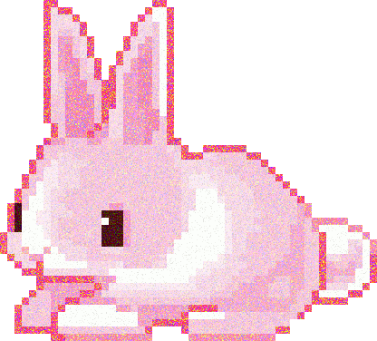
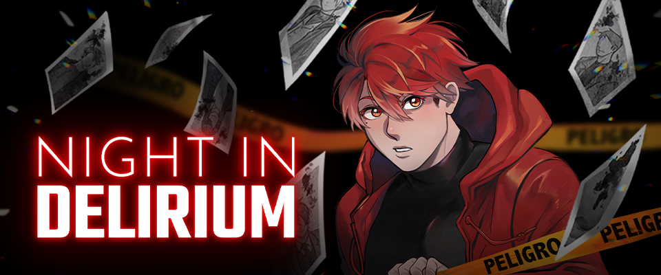
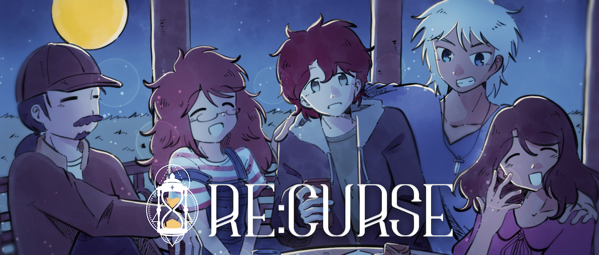
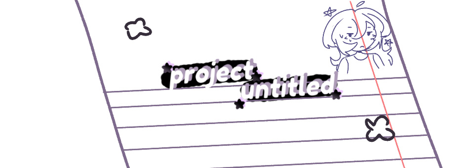
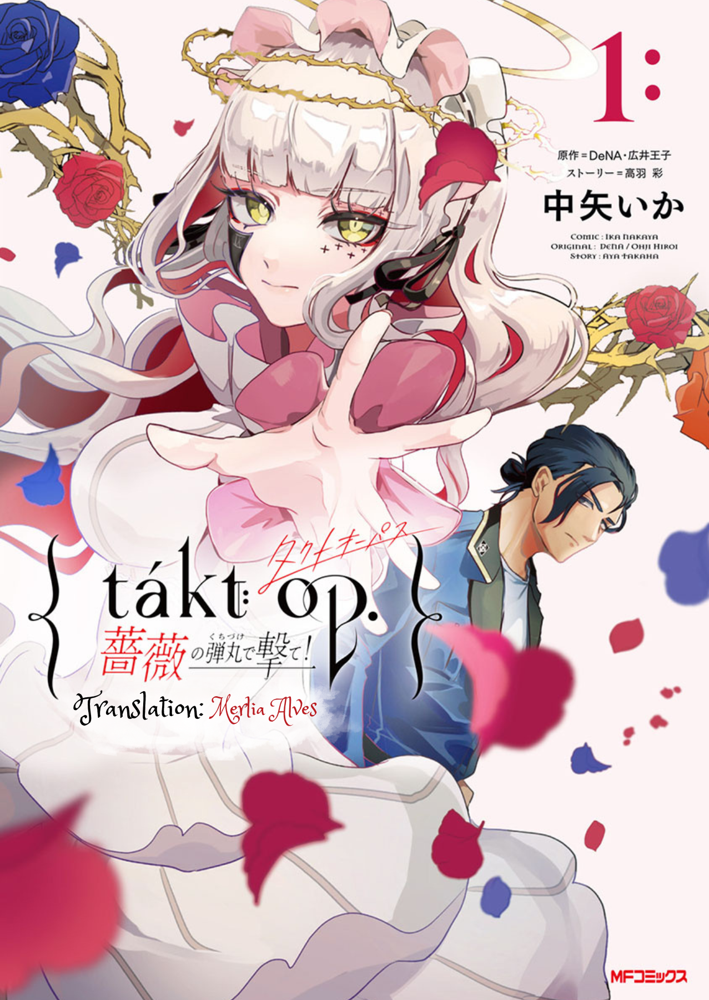
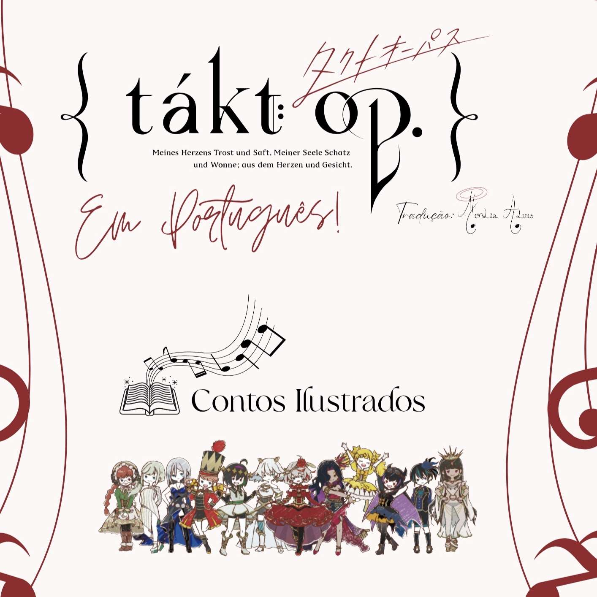
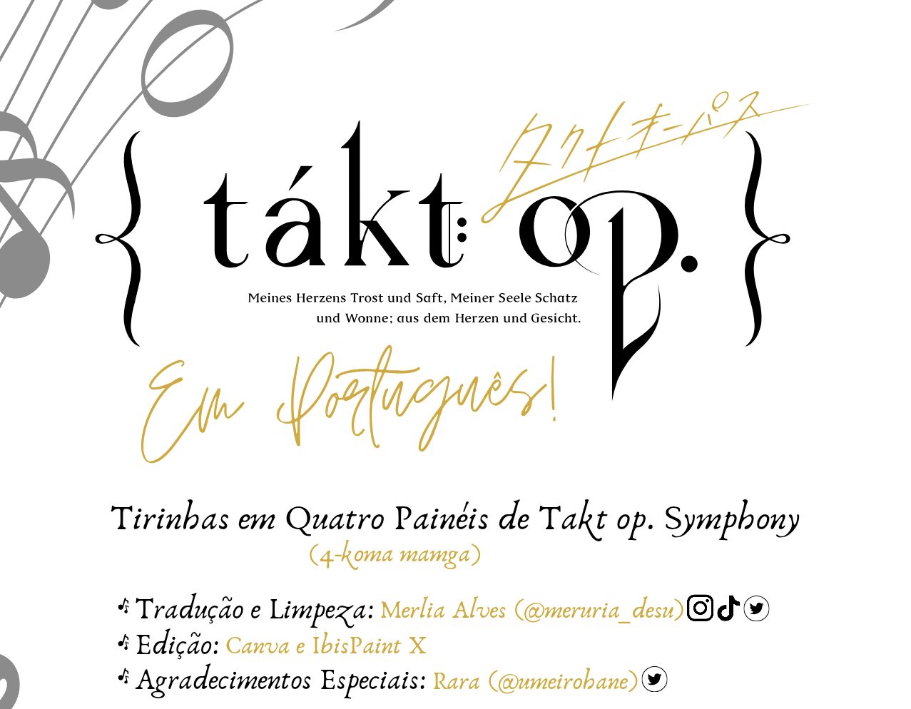
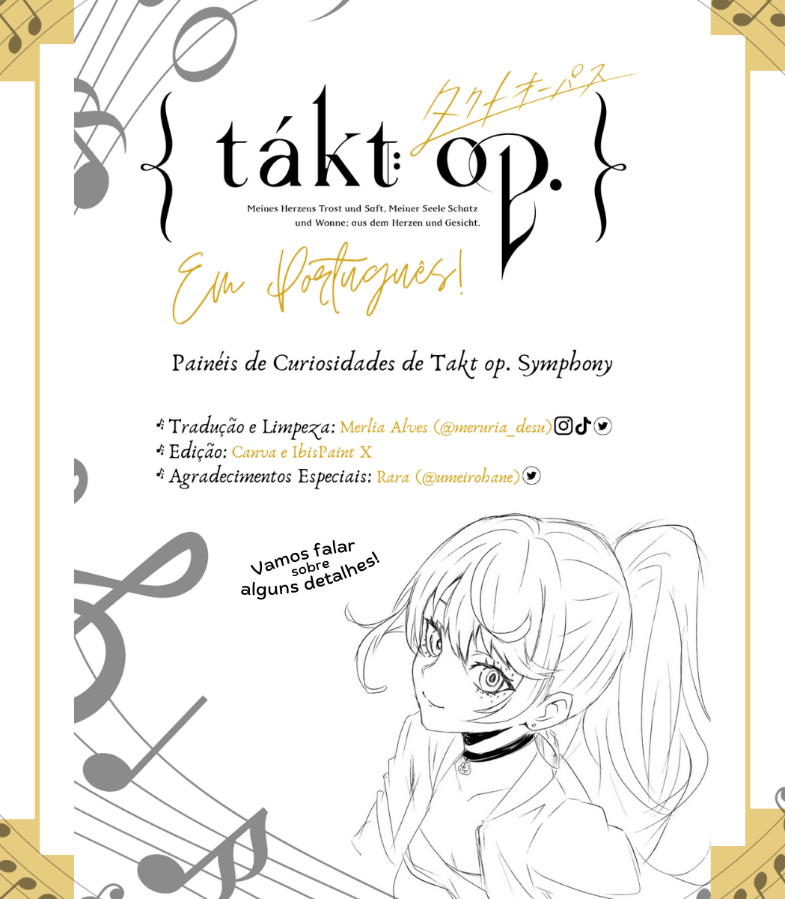
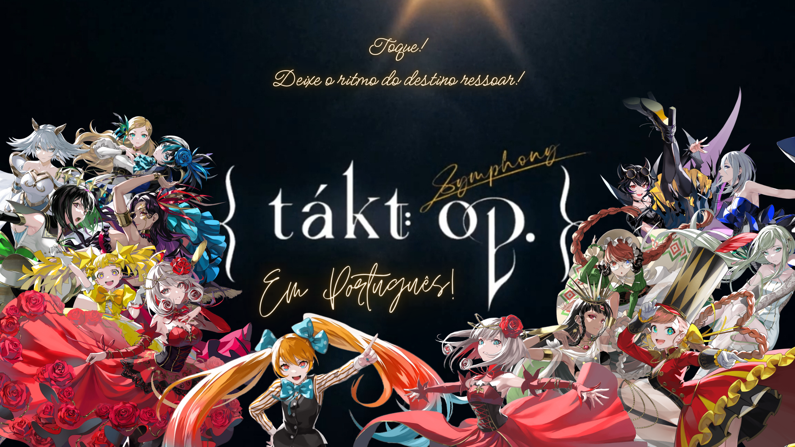

About Me
Services
Projects
Contact

About Me
Hello! I'm Merlia Alves, an English to Brazilian Portuguese freelance translator specializing in narrative-driven content.
I have worked on the localization of visual novels, helping transform stories into natural, immersive experiences for Brazilian players. My work focuses on preserving the original tone, personality, and emotional impact while making every line feel authentic to the target audience.
My journey as a translator began through personal passion projects, where I translated story-driven game content, manga chapters, and subtitles. Those experiences allowed me to develop not only my translation skills but also a strong attention to context, consistency, and cultural adaptation.
I enjoy working with creative media such as games, visual novels, books, comics, and interactive narratives. Every project is an opportunity to connect people with stories that deserve to be experienced in their own language.
Services
I provide English to Brazilian Portuguese localization and translation services focused on clarity, natural readability, and faithful adaptation to the original work. Whether the project is narrative-driven or technical, my objective is to create translations that sound authentic to Brazilian readers while preserving the author's style and intent.
⊹₊˚‧︵‿₊୨ᰔ୧₊‿︵‧˚₊⊹
Pricing
My standard rate starts at US$ 0,10 per word for general games/content and US$10 per 1,000 words for visual novels.
Every project is unique, so the final quote is based on factors such as word count, scope, complexity, and turnaround time.
I strongly support indie development and community-driven projects, so discounted rates may be available depending on the project's needs and budget.
⊹₊˚‧︵‿₊୨ᰔ୧₊‿︵‧˚₊⊹
What I Offer:
❥ Story & Narrative Translation
❥ Game Localization
❥ Manga & Comic Translation
❥ Subtitle Translation
❥ Proofreading & Editing
❥ Localization & Cultural Adaptation
❥ UI, Menus & Interface Translation
Every translation is carefully reviewed to ensure consistency, readability, and a smooth experience for the final audience.
Projects
A collection of localization projects demonstrating my experience in English to Brazilian Portuguese translation across games and other creative media.

Night in Delirium

Re:Curse

Project Untitled
⊹₊˚‧︵‿₊୨ᰔ୧₊‿︵‧˚₊⊹
Personal Localization Projects
A selection of self-initiated localization projects, showcasing my English to Brazilian Portuguese translation work across videos, comics, and other creative media.

Takt op: Shoot with Rose Bullets!

Takt op: Illustration Novels

Takt op. 4-Koma Comics

Takt op: Let's talk about some details!

Takt op. Symphony Story Mode
Contact
Looking for an English to Brazilian Portuguese translator for your project? Let's work together! Feel free to get in touch. I'll be happy to discuss your localization needs and help bring your story to Brazilian audiences.
merliaalvessilva@gmail.com
⌨ Discord
meruria_desu
𝕏 Twitter (X)
@meruria_desu